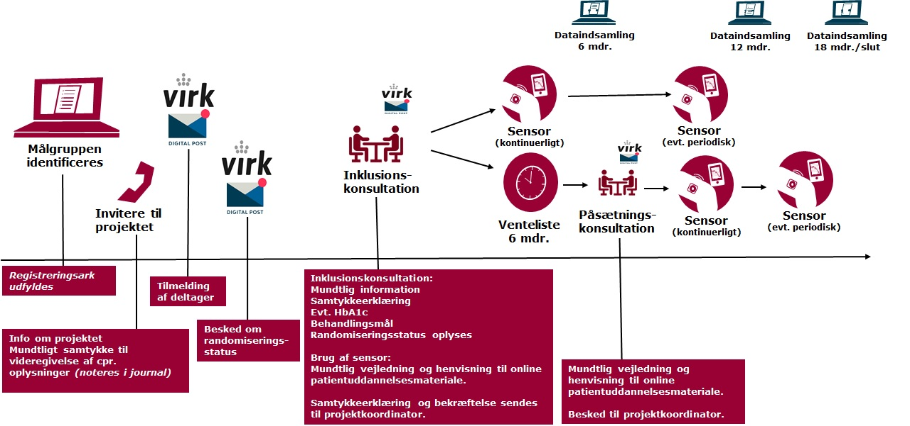

National afprøvning af glukosesensorer til type 2-diabetes: Afprøvning af sensorer i almen praksis
Om Projektet
Sammen med ca. 50 klinikker fra Region Midtjylland, Region Syddanmark og Region Sjælland afprøvers brugen af Continuous Glucose Monitoring (CGM) sensorer til patienter med type 2-diabetes (T2D), der bruger insulin og har HbA1c > 53 mmol/mol.
Formålet med projektet er at afdække værdien af at anvende blodsukkersensorer som hjemmemålingsudstyr i almen praksis, med fokus på at forbedre blodsukkerreguleringen, styrke patienternes egenomsorg, samt øge tryghed og tilfredshed med behandlingen. Derudover undersøges, om brugen af hjemmemålingsudstyr kan reducere behovet for fysiske kontakter mellem patienter og sundhedspersonale.
Dette projekt sigter mod at forbedre behandlingen af type 2-diabetes ved at integrere ny teknologi i den daglige kliniske praksis.
Sådan anvendes sensorerne
- CGM-sensorer anvendes kontinuerligt, indtil behandlingsmålet (HbA1c < 53 eller individuelt fastsat niveau) er opnået. Dog minimum 6 måneder.
- Efter opnåelse af behandlingsmålet anvendes CGM-sensoren fortsat i to uger før en aftalt konsultation.
- En patient kan maksimalt anvende en CGM-sensor i 12 måneder.
Projektets flow
Efter oplæringsmødet følger projektet nedenstående figur:

Hvad får jeres klinik ud af at deltage?
Som deltager i projektet får jeres klinik
- Gratis glukosesensorer i op til 12 måneder til inkluderede patienter.
- Økonomisk kompensation for til rekruttering og dataindsamling.
- Mulighed for at være blandt de første til at anvende glukosesensorer i behandlingen af type 2-diabetes.
Sådan rekrutterer og registerer lægeklinikken deltagere i projektet
- Klinikken finder målgruppen ved at trække en liste over T2D patienter med HbA1c >53, som bruger insulin. Listen suppleres med patienter med HbA1c > 53, der kan have gavn af at starte insulinbehandling.
- Den praktiserende læge vurderer i samarbejde med patienten, om patienten er egnet til at deltage i projektet, baseret på definerede inklusions- og eksklusionskriterier.
- Før videregivelse af oplysninger om patienter, der ønsker at deltage, indhentes mundtligt samtykke til videregivelse af kontaktoplysninger. Samtykke noteres i patientens journal.
- Det registreres, hvor mange patienter der er i målgruppen, hvor mange der efter vurdering af inklusions- og eksklusionskriterier bliver inviteret, og hvor mange der slutteligt siger ja til at deltage. Vi forventer ca. 10 invitationer og ca. 7 inkluderede deltagere pr. lægekapacitet.
- Klinikken skal sikre måling af HbA1c-niveauer ved baseline samt ved 6 og 12 måneder samt registrere behandlingsmål.
- Data overføres til Steno Diabetes Center Aarhus på tre tidspunkter. Data overføres dels ved indtastning i REDCap og dels ved AGP-rapporter, der sendes via sikker post.
Tilmelding
Der er plads til at ca. 50 lægeklinikker kan deltage i projektet i alt i Region Midtjylland, Region Syddanmark og Region Sjælland. Tilmelding sker efter først-til-mølle-princippet. Tilmeld jer oplæringssmødet så hurtigt som muligt, så I kan sikre jeres praksis en plads i projektet.
Erfaringer fra pilotprojekt
Se video med erfaringer fra pilotprojekt med glukosesensorer her
hidden:::
:::
Ofte stillede spørgsmål
1. Hvad er inklusions- og eksklusionskriterierne for deltagere i projektet?
Deltagere skal være over 18 år, have type 2-diabetes, HbA1c > 53 og bruge insulin eller have gavn af at starte behandling. Eksklusionskriterier inkluderer fx gravide, patienter der ikke har mulighed for at up-loade sensordata via deres telefon og patienter der fx bor på plejehjem/bosteder og ikke selv varetager insulinbehandlingen. Kriterierne vil blive præciseret ved introduktionsmødet.
2. Hvordan rekrutteres patienter til projektet?
Klinikken trækker en liste over patienter med HbA1c >53, der bruger insulin. Listen suppleres med patienter med HbA1c > 53, der kan have gavn af at starte insulinbehandling. Klinikken vurderer, ud fra in- og eksklusionskriterierne hvilke patienter der kunne have gavn af at afprøve CGM-sensoren. Klinikken kontakter potentielle deltagere og inviterer dem til deltagelse i afprøvningen. Der indhentes mundtligt samtykke til videregivelse af kontaktoplysninger, som noteres i patientens journal.
3. Hvordan registreres og rapporteres data fra projektet?
Klinikken skal sikre, at behandlingsmål registreres i journalen og at der foretages måling af Hba1c til ca. tid 6 mdr. og tid 12 mdr efter påsætning af sensor. Ved projektets afslutning skal data videregives til projektkoordinator via et patientspecifikt link til REDCap samt via AGP-rapporter, der sendes med sikker post.
4. Hvor meget tid kræver projektet af klinikken?
Tidsforbruget omfatter deltagelse i oplæringsmøde, identifikation, invitation og inklusion af deltagere samt dataregistrering og rapportering. Den præcise tidsramme afhænger af klinikkens størrelse og antallet af patienter.
5. Hvad sker der, hvis vi ikke kan rekruttere nok patienter?
Hvis klinikken ikke kan rekruttere det ønskede antal patienter, vil der være en venteliste. Klinikker på venteliste i den enkelte region kan dermed få mulighed for at deltage, hvis andre klinikker i regionen ikke når deres mål.
6. Hvordan håndteres tekniske problemer med CGM-sensorerne?
Teknisk support vil være tilgængelig gennem projektet. Klinikken vil få instruktioner om, hvordan man kontakter supportteamet ved eventuelle problemer med sensorerne.
7. Er der nogen omkostninger for klinikken?
Der er ingen omkostninger for klinikken for selve CGM-sensorerne, og der vil blive givet økonomisk kompensation for ekstra administrative opgaver og dokumentation.
8. Hvordan vil økonomisk kompensation blive udbetalt?
Svar: Økonomisk kompensation udbetales baseret på antallet af patienter, der deltager i projektet, og dækker tid til blandt andet rekruttering og dataindsamling. Den økonomiske kompensation er ca. 3200 pr inkluderet deltager, samt honnorar for deltagelse i oplærings- og afslutningsmøde. Nærmere detaljer om udbetalingsproceduren vil blive givet i oplæringssmødet og i samarbejdskontrakten.
9. Hvad sker der, når projektperioden er slut?
Svar: Når projektperioden er afsluttet, skal alle de sidste data overføres til Steno Dibetes Center Aarhus via REDCap. Klinikkerne skal returnere eller destruere eventuelle resterende sensorer i henhold til de instruktioner, der gives ved projektets afslutning.
10. Hvordan kan projektkoordinatoren kontaktes, hvis vi har spørgsmål undervejs?
Svar: I kan kontakte projektkoordinator Tina Quist via e-mail på tina.quist@rm.dk eller telefonisk på 24 34 63 47. Tina er tilgængelig for at besvare spørgsmål og tilbyde støtte gennem hele projektet.
Den nationale forsøgsordning
Projektet er et delprojekt i en national storskala afprøvning af glukosesensorer til personer med type 2-diabetes; “National Forsøgsordning med glukosesensorer til type-2 diabetes”, iværksat i henhold til aftalen “Mere behandling i eget hjem” mellem Regeringen, Danske Regioner og Kommunernes Landsforening. Projektet sker i et samarbejde mellem Steno Diabetes Center Aarhus, Steno Diabetes Center Sjælland og Steno Diabetes Center Odense. Du kan læse mere om den nationale forsøgsordning her
Kontakt
Du kan finde kontaktoplysninger til projektkoordinator og de regionale kontaktperseoner her